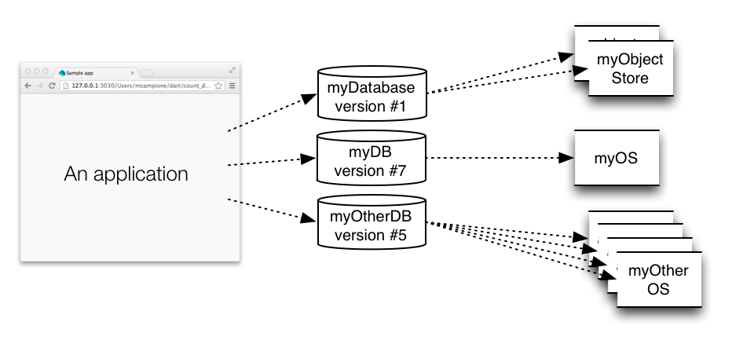
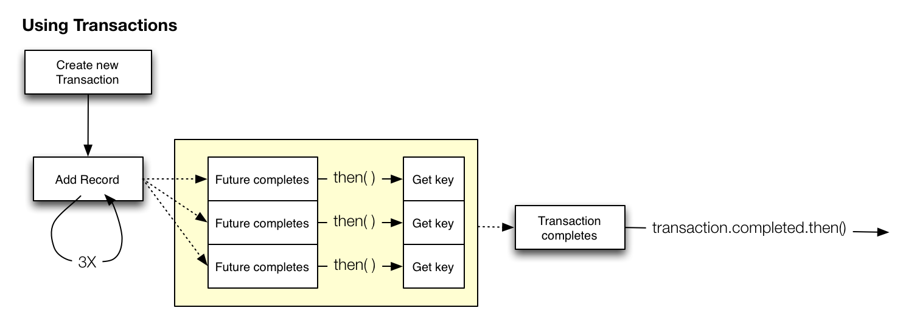

使用 IndexedDB
在客户端保存数据。
浏览器提供了多种在客户端保存数据的方式。 其他一种存储方式为 IndexedDB— 被 很多浏览器 支持的一种标准存储方式。 IndexedDB 提供了一个索引数据库的实现。 IndexedDB 中每个记录通过唯一的索引或者主键标示， 这样查找数据非常高效。 你可以在 IndexedDB 中保存大量结构化数据， 例如 图片、数组、map以及对象 等。 标准并没有限制每个记录的大小 或者每个数据库的大小， 但是 浏览器自己可能会有存储大小的限制。
IndexedDB 有多中优势。 使用 IndexedDB 你的应用
- 即使在没有网络情况下也可以使用所有功能。
- 可以在断网情况下缓存数据和恢复状态。
- 在网络连接中断的情况下不丢失数据。
- 需要较少的网络流量。
- 由于数据管理在本地处理而不是通过网络，所有 性能会好很多。
该教材介绍如何用 dart:indexed_db 库 来在浏览器的 IndexedDB 中保存和查询数据。
- 运行应用
- 关于该应用的基本知识
- 关于 IndexedDB 的详细介绍
- 导入 IndexedDB 库
- 检查是否支持 IndexedDB
- 创建并打开数据库
- 创建一个对象存储
- 使用名字索引
- 使用事物
- 添加数据
- 删除数据
- 清空数据
- 用 cursor 查询所有数据
- 其他资源
- 接下来干啥？
运行应用
下面的 count_down 应用维护了一些里程碑事件
并为每个事件显示一个倒计时功能。
动手试试！ 输入每个里程碑的名字、日期和时间然后点击加号 (+) 按钮。 应用显示该里程碑发生时间的倒计时 和名字。 每隔一秒该应用更新一下显示的数据。
由于该程序用浏览器的 IndexedDB 保存数据， 所以关闭浏览器页面，然后再次打开 该页面。 你创建的里程碑事件依然存在。
使用里程碑右边的减号(-) 按钮 来删除该事件。 用 Clear 按钮来删除所有的事件。
用开发者工具查看数据库
你可以用浏览器开发者工具来查看 你的应用使用的 IndexedDB 数据库。 在 Chrome中，通过 View > Developer > Developer Tools 菜单， 然后选择打开窗口的 Resources tab 页。 下图显示了有两条里程碑 事件的 count_down 应用的数据库。
count_down 应用有个名字为 milestoneDB 的数据库。
在该数据库中有一个名字为 milestoneStore 的对象存储。
在该示例中，每个对象存储中的记录都是一个
里程碑 map。
名字为 name_index 的索引和每个里程碑的名字关联，
该索引支持按照里程碑的名字来搜索数据。

关于该应用的基本知识
count_down 应用使用了一个 Model（模型）、 View（视图）、 View-model (MVVM) 结构。

-
上图中间的 View-model 连接 模型和视图。 使用 UI 和 Timer 事件来修改 模型。 MilestoneApp 类是实现了View-Model 功能的 主要类， 该类管理 Timer并实现 应用的业务逻辑 （负责模型和视图的信息交换）。
-
View 实现了该应用的用户界面。 count_down 应用总有两个自定义元素实现了视图： CountDownComponent 描述了整个应用的用户界面， MilestoneComponent 描述了每个独立里程碑的用户界面。 当用户界面发生事件的时候，这些控件通知 View-model。
-
Model 包含并管理数据。 MilestoneStore 类实现了 模型， 在内存中管理一个里程碑对象列表， 并且保持 IndexedDB 和列表同步， 持久化的保存里程碑数据。 View-model 查询模型来初始化数据， 并用 Polymer 的数据绑定技术来和视图同步。 并且还使用了 Timer 事件来触发模型更新。
count_down 应用使用的库
count_down 应用使用如下库：
| 库 | 描述 |
|---|---|
| dart:indexed_db | 保存数据到索引数据库 |
| dart:async | 执行异步操作 |
| dart:core | 用 DateTime 和 Duration 来管理时间相关的任务 |
| Polymer | 实现自定义元素和数据绑定 |
该教程介绍了 count_down 应用中使用的 IndexedDB API。
关于 IndexedDB 的详细介绍
关于 IndexedDB 有些你需要知道的事实：
-
每个源 (主机、协议和端口) 都有自己的数据库。 在一个源中使用唯一的名字来区分每个数据库。 IndexedDB 具有同源策略， 每个应用和数据库具有相同的源（同一个网站）。
-
一个 数据库 通过名字和版本号识别。 一次一个数据库只能有一个版本。
-
一个 对象存储 通过唯一的名字来识别。 只能在 “upgrade needed” 事件中创建对象存储。 在对象存储中保存数据记录。 一个数据库可以有多个命名对象存储。
-
一个 事物 提供了数据库可靠 的数据查询和修改操作。 所有对数据的操作都必须在 事物范围内。
-
一个 记录 是一个 key-value 对， key 是该数据记录的唯一访问标示符。 你可以自己设置 key 也可以 让对象存储为你创建。
-
一个 索引(index) 是一个特殊的对象存储， 在保存的数据 key 值和 数据库的 key 之间做映射。 索引是可选的。
-
一个应用可以使用多个数据库。 每个数据库可以有多个对象存储， 每个对象存储可以有多个记录。

count_down 应用中的 IndexedDB
count_down 应用使用一个名字为
milestoneDB 的数据库，版本号为 1。
里面有一个名字为 milestoneStore 的对象存储。
该应用把里程碑对象保存为一个 Map，
Map 中的 key 和 value 都是字符串。
milestoneName 字段是里程碑的唯一名字。
happensOn 字段是否日期加上时间的值。
当该应用重新打开的时候，
这些字段可以恢复应用的状态。

因为里程碑的名字是唯一的， 应用可以用该名字作为数据库的 key。 然而，处于演示目的该应用使用了 一个由数据库生成的主键作为 key。 在开发者工具窗口中可以发现该主键：

导入 IndexedDB 库
要使用 Dart IndexedDB API 必须 先导入 IndexedDB 库：
import 'dart:indexed_db';
检查是否支持 IndexedDB
使用 IdbFactory 类的 supported getter 函数
来判断浏览器是否支持 IndexedDB。
bool idbAvailable = IdbFactory.supported;
如果 supported 值为 false，你可以
- 抛出异常并退出应用
- 使用其他的 API，
例如用于客户端存储的
window.localStorage - 继续运行，不启用本地持久化和离线功能
- 或者 和 count_down 应用一样， 禁用 UI 控件并显示错误信息。
创建并打开数据库
用 window.indexedDB.open() 来创建新的数据库或者
打开一个已经存在的数据库。
根据你名字和版本参数来判断
是否打开或者创建数据库。
-
要打开一个数据库， 使用当前存在数据库的名字 和版本号。
-
要更新数据库到新的版本， 用高版本号和已经存在的名字 作为参数调用 open() 函数。 (一个数据库同时只能存在一个 版本) 同时该操作会触发一个 upgrade needed（需要升级） 事件。
-
要创建一个全新数据库， 用新的名字打开数据库即可。 同时也会触发需要升级事件。
下面是 MilestoneStore 类中创建和 打开数据库的代码：
Future open() {
return window.indexedDB.open('milestoneDB',
version: 1,
onUpgradeNeeded: _initializeDatabase)
.then(_loadFromDB);
}
前两个参数代表数据库的名字
和版本号。
第一次运行 count_down 应用的时候，
版本号为 1 的 milestoneDB 数据库被创建。
下次再次运行该应用的时候，
数据库直接被打开。
第三个参数 onUpgradeNeeded 是需要升级事件
的回调函数。
当新数据创建或者
数据库版本增加的时候
会触发该事件。
在这个回调函数中可以创建新的
对象存储。
你只能在需要升级事件中来创建
对象存储。
要保存数据，你_必须_ 有一个对象存储。
下一届介绍如何创建对象存储。
下面的流程图概述了 window.indexedDB.open() 函数
的执行逻辑。
由于创建和打开数据库需要时间，所以
window.indexedDB.open() 函数返回一个 Future 对象，
这样打开操作将异步运行，
当完成打开数据库时，返回一个数据库对象。
数据库对象可以在 then() 函数注册
的回调函数中获取。
上面示例中的回调函数
为 _loadFromDB() 。
_loadFromDB() 使用 cursor 来读取
所有的里程碑记录
并设置应用数据。
读取数据在
用 cursor 查询所有数据 中介绍。
创建一个对象存储
新创建的 数据库并 不包含对象存储。 只有在需要升级事件中 才能创建对象存储。 当创建新数据库或者 创建新版本的数据库 的时候会触发 需要升级事件。
在 count_down 示例中需要升级事件
的回调函数为 _initializeDatabase 。
该函数创建了一个对象存储和 索引。
static const String MILESTONE_STORE = 'milestoneStore';
static const String NAME_INDEX = 'name_index';
void _initializeDatabase(VersionChangeEvent e) {
Database db = (e.target as Request).result;
var objectStore = db.createObjectStore(MILESTONE_STORE,
autoIncrement: true);
var index = objectStore.createIndex(NAME_INDEX, 'milestoneName',
unique: true);
}
上面的代码用回调函数 的参数 VersionChangeEvent 来获取 数据库对象。
用数据库对象的 createObjectStore() 函数
来创建新的对象存储。
每个对象存储都需要有个唯一的名字。
count_down 应用中对象存储的名字为 milestoneStore。
所有的倒计时里程碑记录都从该
对象存储中读取和保存在该对象存储中。
该代码还设置了 对象存储 的 autoIncrement 属性为 true。
当 autoIncrement 为 true 的时候，
数据库会自动生成一个唯一的主键，
这样你就不用关心唯一主键的问题了。
最后，_initializeDatabase 还创建了一个名字索引。
使用名字索引
一个索引提供一个查找表。 可以关联对象存储的主键和一个字段。 在该示例中， 索引把主键和 milestoneName 字段关联。

索引提供如下两个优点：
- 可以搜索索引的字段而不是主键
- 用索引保证该字段的值为唯一的
count_down 应用在需要升级事件中 创建对象存储的同时 创建索引，这也是 唯一可以创建索引的地方。
static const String NAME_INDEX = 'name_index'; ... objectStore.createIndex(NAME_INDEX, 'milestoneName', unique: true);
createIndex 函数由三个参数：
- 索引表的名字，这里为 ‘name_index’， 需要是唯一的，
- 存储对象中需要索引的_字段名字_，
- unique 一个布尔值。 当为 true 的时候， 索引将保证里程碑的名字是唯一的。 在 count_down 应用中，如果你 尝试添加一个同名的事件， 则索引的限制会导致 add() 函数调用失败。
使用事物
所有的数据库操作 都需要在同一个 Transaction 事务 中完成。
在 count_app 应用的 _db 数据库对象中
获取一个事务。
Transaction t = _db.transaction(storeNameOrNames, mode);
transaction() 函数的第一个参数为事务的范围。
在 count_down 应用中，
事务的范围为
唯一的一个对象存储 milestoneStore，
你可以指定多个对象存储。
为了执行的效率，你应该只指定需要的对象存储。
第二个参数设置了类型，
可以为 readwrite 、 readonly 、 versionchange 类型。
count_down 应用只使用了 readwrite 和 readonly 类型事务。
只有必要的时候才使用 readwrite 类型，readonly 类型比较高效率
并且同时可以运行多个 readonly 事务，而
一次只能运行一个 readwrite 事务。
创建一个事务后， 就可以用该事务执行 一个或者多个操作。 数据库操作需要时间， 所以执行的操作是非主 UI 线程中执行 并通过 Future 来返回结果。 每个操作都使用一个 Future 对象。 事务本身也使用一个 Future， 当所有的事务操作完成后事务本身才完成。
例如， 你可以用一个事务往对象存储中添加多条记录。 每个添加操作都是一个独立的操作并用独立的 Future。 下图为添加三条记录 的流程图。 当三个操作都完成后， 该事务就结束了。

很多数据库事务都遵守如下规则：
- 在对象存储上创建事务。
- 使用事务执行一个或多个操作。
- 当需要在事务成功完成的时候 执行其他操作，则可以用回调函数。 例如，当在数据库中添加记录的时候， 你可以在记录添加完成后获取该记录的主键。
- 如果要在事务所有操作都成功完成后执行其他操作，
则可以用
transaction.completed回调函数。 在 count_down 应用中， 用该回调函数来保持和里程碑列表同步数据。
添加数据
下面是在数据库中添加记录的代码：

上面的代码创建新的 Milestone 对象并转换为 Map， 然后在对象存储上创建一个 readwrite 事务。
然后调用对象存储的 add() 函数来
添加里程碑 Map 到数据库中，
同时用 then() 注册了一个回调函数。
由于该对象存储用 autoIncrement: true 参数创建，
当添加记录的时候，数据库
会自动创建一个唯一的主键。
该主键的值作为回调函数的参数返回。
最后，代码在事务上注册了 一个回调函数。
当数据库上的添加操作完成时， 和 添加操作相关的 Future 也完成后， 会用生成的主键调用回调函数。 count_down 应用保存该主键到 Milestone 对象中。
这时， 需要注意，虽然添加操作完成了， 但是该事务还没完成！ 只有事务完成了，对数据库 所做的修改才可见。
当事务中的所有操作完成后， 上面的示例中为一个添加操作， 事务完成并调用其回调函数。 在事务的回调函数中， count_down 应用把 milestone 添加到 列表的内存引用中，Future 返回新添加 的 milestone 对象。
删除数据
下面是从数据库中删除数据的代码：
var transaction = _db.transaction(MILESTONE_STORE, 'readwrite');
transaction.objectStore(MILESTONE_STORE).delete(milestone.dbKey);
return transaction.completed.then((_) {
milestone.dbKey = null;
milestones.remove(milestone);
});
上面的代码再次创建了一个 readwrite 事务。
要删除数据，事务类型必需为 readwrite 。
用对象存储的 delete() 函数并用要
删除数据的主键作为参数来删除数据。
当事务完成后， count_down 应用就可以从 列表中删除 milestone 对象了， 如有必要就停止该对象的 Timer。
注意上面的代码并 没有设置删除操作的 回调函数，只设置了 事务的回调函数。 当事务完成的时候， 可以执行从 list 中 删除 milestone 的操作。
清空数据
用对象存储的 clear 函数清空所有数据。
var transaction = _db.transaction(MILESTONE_STORE, 'readwrite');
transaction.objectStore(MILESTONE_STORE).clear();
return transaction.completed.then((_) {
milestones.clear();
});
用 cursor 查询所有数据
当应用开始的时候， 如果已经有数据库存在了， 则 count_down应用就从 已经存在的数据库中读取 数据并 用读取的数据来 初始化里程碑表。
当数据库成功打开后会
调用 _loadFromDB() 函数。
在该函数中读取数据库的数据。
Future _loadFromDB(Database db) {
_db = db;
var trans = db.transaction(MILESTONE_STORE, 'readonly');
var store = trans.objectStore(MILESTONE_STORE);
var cursors = store.openCursor(autoAdvance: true).asBroadcastStream();
cursors.listen((cursor) {
var milestone = new Milestone.fromRaw(cursor.key, cursor.value);
milestones.add(milestone);
});
return cursors.length.then((_) {
return milestones.length;
});
}
由于读数据并不需要修改数据库，所有这里用 readonly 类型事务。
可以用 Cursor 对象来一步一步从 数据库中遍历数据。 然后为每条记录创建一个 Milestone 对象。 对象存储使用 stream 来触发每条 记录的事件。 通过监听 stream ， 你的 代码 可以 监听每条记录的读取。
用对象存储的 openCursor 函数来打开一个 Cursor。
Cursor 记录了当前数据在数据库中的位置。
count_down 应用用可选的参数 autoAdvance 来打开
一个 Cursor。
该参数为 true 说明当读取完一条
记录后，Cursor 会自动的移到
下一条记录。
如果不设置 autoAdvance 参数，
则每次需要自己调用 next()
函数来移动 Cursor 到下一条数据库记录。
openCursor() 返回一个可以监听的 stream。 这里的 stream 为 一个 broadcast stream（广播流）。 所以应用可以监听读取事件 和最终读取了多少记录。
每次读取一个记录的时候都会
触发事件和回调函数。
在该示例中，一个名字
为 cursor 的
CursorWithValue
对象作为参数来
调用回调函数。
用 cursor.key 来获取读取记录的主键。
用 cursor.value 来获取读取记录的内容。
_loadFromDB 函数返回一个 Future， 该 Future 返回了读取数据的条数。
其他资源
- 关于 Future 的更多信息请查看 使用 Future Based APIs 和 Future 和错误处理。
- 关于 Polymer 的信息，请参考 定义自定义元素。